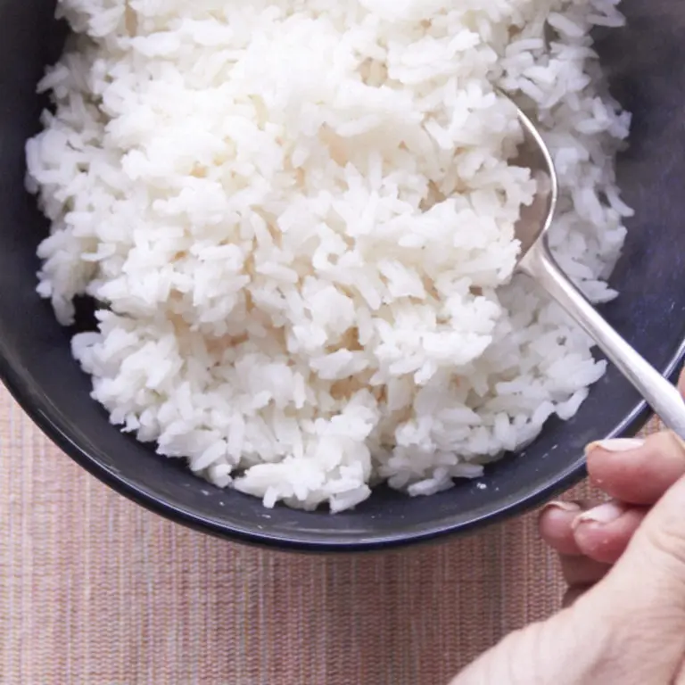

Rice

Description
Rice is the seed of the grass species Oryza sativa (Asian rice) or less commonly Oryza glaberrima (African rice). The name wild rice is usually used for species of the genera Zizania and Porteresia, both wild and domesticated, although the term may also be used for primitive or uncultivated varieties of Oryza.
Ingredients
- 2 cups water
- 1/2 teaspoon salt
- 1 tablespoon butter or oil optional
- 1 cup long grain white rice
Steps
- Bring the water to boil in a medium saucepan. Add the salt and butter and allow the butter to melt.
- When the water has returned to a boil, stir in the rice. Let the water return to a light simmer. Stir again, cover the pot and turn the heat down to low. Keep the rice simmering slightly, and keep the pot covered (you may have to peek after a few minutes to make sure the heat is at the correct temperature, but then let it cook, covered). Start checking to see if the rice is tender and all of the liquid is absorbed at about 17 minutes. It may take up to 25, especially if you are making a larger quantity of rice.
- When the rice is cooked, turn off the heat and let it sit for another couple of minutes to finish absorbing any liquid. Take off the lid, fluff the rice with a fork and let it sit for another 2 minutes or so, so that some of the excess moisture in the rice dries off.
HOME PAGE